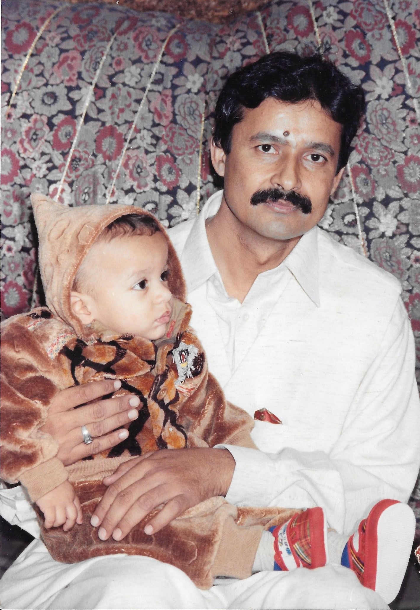
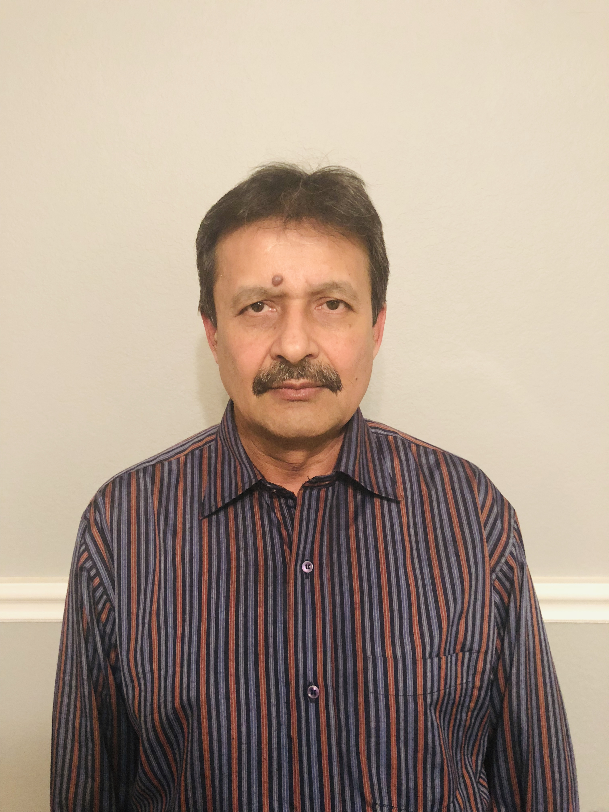
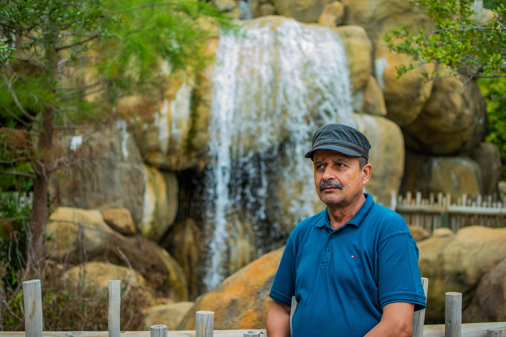

Someone Who Inspires Me
This bioSite is dedicated to my father, someone whose example has shaped the way I think about responsibility, family, and personal growth. He has always shown me that success is not only measured by job titles or money, but also by the way a person supports others and stays committed during difficult times. Through this website, I want to share a small part of his story and explain why he continues to inspire me.
Goals and Values
One of my father's main goals has always been to create stability for his family and give his children opportunities to grow. He believes in working consistently, learning from mistakes, and making decisions with the future in mind. Even when circumstances are challenging, he tries to remain patient and focused.
That attitude has influenced my own goals as a student and software engineer because it reminds me that progress usually comes from steady effort rather than quick results. His values have taught me to take responsibility for my decisions, remain dependable, and continue learning throughout life.

Personal Accomplishments
His personal accomplishments are meaningful because they reflect persistence and sacrifice. He has spent years supporting his family, adapting to new responsibilities, and continuing to move forward through major life changes. He has also taught us practical lessons about discipline, respect, and helping relatives and community members whenever possible.
These achievements may not always come with awards, but they have had a lasting effect on the people around him. Building a stable life, raising a family, and remaining committed during difficult periods are accomplishments that I respect and hope to carry forward in my own life.

Life Beyond His Responsibilities
Outside of his responsibilities, my father values family time, conversation, and simple routines that keep everyone connected. He enjoys sharing stories from his past, giving advice, and staying involved in family decisions. These moments allow younger family members to learn from his experiences and better understand where our family came from.
I chose him as the subject of my bioSite because his life shows that leadership can be quiet and consistent. His example has encouraged me to work hard, remain dependable, and appreciate the people who support me. This website is a way to recognize his influence and preserve some of the lessons he has shared with us.